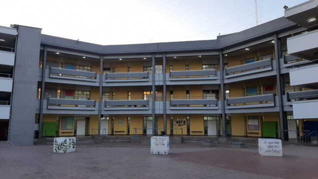

CAPÍTULO 3 DE 4 · ESCUELA DEL MAGISTERIO
AÑO DE CREACIÓN
1947
29 de diciembre · Mendoza
ESCUELA DEL MAGISTERIO
Escuela del Magisterio
Enseñar, aprender y abrir caminos

Una historia ligada a la formación docente y a los idiomas.
Desde sus comienzos, la escuela tuvo como objetivo formar maestros y brindar una preparación que incluía inglés y francés.
Conocer su origen →